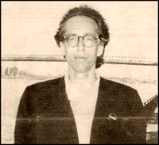

John Pierson
By A.G. Basoli
Name: John Pierson.
Mid ,70a-mid '80s:
Specialized distributor (US
Classics, Film Inc.); reper-
tory exhibitor (Bleeker
Street Cinema); festival
director (American
Mavericks); film programmer
(Film Forum 2); and tour
dirver (Wim Wenders).
Mid'80s - mid'90s: Producer's
Rep.; founder of first com-
pletion funding company
(Islet, currently Grainy
Pictures)
1996-Present: Author,
(Spike, Mike, Slackers and
Dykes); creator and host of
IFC's Split Screen; and
somewhat responsible for the
Blair Witch craze.
Distinguishing features:
Wrote Spike Lee a check for
$10,000 to finish She's
Gotta Have It; closed an
uprecedented $3 million deal
with Warner Bros. for
Michael Moore's Roger and
Me; helped make Richard
Linklater's Slacker a household word.
"I'll do the interview on one
condition,', announced
Pierson on the phone. "I
don't want to talk about the
old me. I want to talk about
the new me."
MONITOR: Who is the new John Pierson?
John Pierson: It partly stems from changes that started coming about from the point the book
(SPIKE, MIKE, SLACKERS AND DYKES) was published, in January 1996. I didn't want to recap
everything up to this point and say "Now I'm going to do something utterly new and completely different."
It was more like "I'd like to take everything that I did and that I learned up to this point, most of
which is reported in the book, and figure out how to apply that to some lateral activities." That was
the idea behind doing the TV Show: Split Screen. I wanted to take the spirit of the book, a
lot of the filmmakers who were in the book and a lot of the next wave of filmmakers who I hope will
become the next century's big filmmakers, and somehow bring everybody together working on the show.
In the first season a lot of them were on: Spike, Richard Linklater, Errol Morris, Terry Zwigoff. People
like Chris Smith (AMERICAN JOB) started working on the show, and directed a lot of segments. So it is
a new me, but it's completely integrated with the old me, the repping years - whatever you want to call them - the
completion - financing and repping years. Now we can take the budget of the television show - not a big budget -
but a substantial budget for the niche cable world, and spread that money around instead of just picking
two features in a year to get involved with in a bigger way. At this point literally over 100 different
filmmakers have shot segments that appear in the show. And when we wind up taking $10,000, like we did at
the end of the first year, and put it in THE BLAIR WITCH PROJECT, it s obviously much closer related
to the sense that people have of what my identity used to be. They wonder "why don't you do that anymore?"
I do still do that - I just do it through a different structure.
M: Is it one of your aims to have films made out of the segments of the show?
JP: Obviously not everything, not every segment can be conceived that way. It's tricky.
We did ten shows in 1997, 20 in 1998 and were very entertaining for TV viewers.
There might be certain film savvy types that might be more apt to watch the Independent Film Channel,
but the television universe and audience is basically an audience that watches other cable TV shows, so
you try to create stories that will draw them in, stories that have some interest that is not predicated
on some kind of in-depth, insider knowledge of who Lily Taylor is.
M: How do you choose your segments?
JP: In the beginning, in 1997 I basically would pick everything: like let's do something with Spike.
Occasionally, I would try to match the subject with a filmmaker that I thought would be suitable because
of the work of theirs that I had seen, or because they seemed the ideal person to tackle that particular
subject. Now that time has gone by. There are a lot of people who have become part of the inner family,
or core group of filmmakers who have done multiple segments for the show. They have much more of a free
hand. I won't say complete carte blanche, but sometimes it's close to it. So now I have my interests
that I want to cover to get a certain diversity, and then I have this family of filmmakers who have their
own subjects or themes that they want to cover. I've trusted them and given them a lot of freedom and
they've returned that with really good work.
M: How does a typical episode work?
JP: Well, let's take Cooking with Chris, in the first episode of this season. Here's how it works.
Doug Stone and P.H. O'Brien, who are partners and have worked on a number of pieces together - including
one of our favorites for the first half of the season - the Godzilla piece, on the guys who played
Godzilla through the years - they went to Tokyo for that. Don't ask me how they do this on a little budget
but they went all the way to Tokyo! So, I don't want to hear any complaints. If anyone shoots something in
New York and they want too much money, we're gonna bust their chops. Anyway, Doug came to me one day and said "Hey
John, I just found out that Christopher Walken has always wanted to do a cooking show. He pitched it to a few
cable channels. Nobody was interested, but maybe we could still want to do something as a prototype." And that's
what happened. Not only Doug and P.H. but also our editor Michael La Haie, who's edited the show from
the beginning, and Amy Elliott who's another one of our regular contributors. The four of them worked on that
episode and did a two-camera shoot. The show's gone totally digital, so many filmmakers have acquired their
cameras - we have our own digital cameras here - but the first thing they did was turn around and buy their
own cameras. One day I'll send them on a five camera shoot! both Amy and P.H. shot the piece with Walken and
Julien Schnabel. Doug was the director, Michael was there thinking ahead of time about how things were going
to cut together, Christopher Walken did his thing - everything worked out.
M: So how does someone get to work on the show?
JP: I would like to see anybody's work that they have to show, shorts or features. That's always a
good measure of whether you think someone can handle executing a piece. If they made a good film, odds
are that they're pretty competent, so then it's just a matter of having a good idea. Sometimes, if
somebody's got a good idea, we'll even take a flyer if they haven't done anything. Anybody who
wants to pitch an idea to the show is more than welcome to just do it. First and foremost is the idea. What's
not a great idea? Well, "what about a story about being the P.A. on a set?" That is not a good idea.
M: Let's go back to THE BLAIR WITCH PROJECT, and how that came about. I imagine the filmmakers '
had been working on the project for a few years.
JP: Well, they had been thinking about it for a while, but the film was shot between the two segments.
M: So how did you come on board?
JP: They totally made their film on their own, in their own way. The way it worked is that in the
trailer they sent me, which is essentially the Sci-Fi Channel Special in compact form, was the back story
of the Blair Witch, more than half of which was witch imagery and local legend. The last portion of it was
about the three missing filmmakers, in Blair County, which doesn't exist. Burkittsville exists, Blair County
doesn't and never did. Now I know! I should have known better at the time. I fell for it! I called up Dan
"Did you look at the footage yet?" He said "There is no footage, John, we made it up." And I was like
"Oh! Stupid me." So I said, let's figure out how we can do something on the show with this. Dan and
Ed Sanchez came up for a visit in Cold Spring - out in Hudson Valley where I live. I said: "We'll show
this trailer and you guys will do these interviews as well, where you talk about how excited you are,
how you can't wait to examine the footage and you don't know what you're going to find." They did
a great job. They were incredible, just deadpan, great acting. So I said "What I want to do, that would
be great television, is to have a cliffhanger with a title card saying 'tune in next season to get the
first look at the footage,' to what was then called the muddy duffel bag. At that point they had
to shoot the "found footage." So, they turned around and shot all of phase one, the filmmakers lost in
the woods shooting their own material. They shot that in October 1997. Dan and Ed quickly started to cut
together the piece for the show while at the same time they were beginning to edit the feature. It took
them a while, as they were editing, to realize that they didn't need to incorporate phase two, which is
all the companion material that's now gone into the web-site, and the Sci-Fi Special. That was a key
decision. That was a total key decision, probably worth one hundred million dollars, give or take. If
they had made the film with all the other stuff, it might have been a very interesting film but would not
have had the same commercial impact with this incredibly huge youth audience. What is different from all
other independent movies realized in twenty years is that it got the high-school and just out of high school
audience that the rest of them had never gotten. If you take all the indies over these twenty years you're
always thinking "Well, it would be great if some 17 year-old would go to this." They never do, maybe on
tape. CLERKS on tape, every high school kid in America has seen. But theatrically, it's three
million dollars. In the case of THE BLAIR WITCH PROJECT there was no wall. There was huge
interest in the younger audience. They weren't going to wait around to see it in video. Everybody
hit the theater right away and that just had never happened before.
M: Do you think the success of THE BLAIR WITCH PROJECT is an isolated case?
JP: Yes. There's not going to be any spill-over or trickle-down. That's why it's frus trating.
My guess now is that the impact on other filmmakers and aspiring filmmakers will be huge. It won't be
great, but it will be huge. Now it's official: take any camera, in any format and start shooting!
The shakier, the better. Basically there won't be a high school kid left in America who's not making a film.
M: What are your thoughts on that?
JP: That's scarier than the Blair Wltch. But I don't really know what the industry lessons are. I don't think it's going to change the audience at all, and I'm not really sure that it changes the business at all. Because the real watershed for business readjustment was PULP Fiction and now all the classic divisions are set up. I don't think this is going to spawn new ones.
M: What did you think of the so-called digital revolution?
JP: Well, digital technology is great. It's the only reason we can make Split Screen in an
affordable way. And see that the filmmakers working on the show are left with something for their efforts.
It's fantastic; but what quality you can get! But that cheaper, high grade picture quality doesn't mean
anything if the content is not there. Independent film has always been content driven. Whatever formats through
the years people have used to tell their story, it's been irrelevant if the story hasn't been there.
People keep forgetting. They get obsessed with "visual makes it all different." They keep forgetting that
HOOP DREAMS, the most successful documentary in history was shot Beta. It originated on video.
M: Do you think that's going to change the exhibition and distribution side of the industry?
JP: George Lucas does, why would I disagree?
M: Do you think digital projectors will be implemented and will revolutionize the distribution system?
JP: Technology is not my thing but all the signs point to the fact that yes, it is coming. I have
seen Beta projections at the Walter Reade at different times - and especially when we did Split Screen
there last year and it looked great. Did it look like film? No, but it wasn't meant to look like film.
I used to program repertory double-features at the Bleecker St. Theater, now a karaoke bar. Twelve
prints would all come in on the same day, that's at least twenty-four cans of film.
If we were showing something long like SEVEN SAMURAI that's like thirty cans itself. I
was the guy who would carry all these cans of film - because I was doing it and I kept thinking "man,
there's gotta be a better way." And when you multiply that fumes 6500 hundred prints shipping around the
country, that's an insane amount of money for what is going to be into guitar picks not too far down the
road. It's an extremely inefficient process.
M: Will we miss celluloid?
JP: Of course, but would I be entitled to miss it if somebody could eventually make the process so
good that it looks and sounds just as good? Hey, I skill have hundreds and hundreds of vinyl albums.
There are things that I replaced but there are things that I didn't get rid of because I thought "Hey I'll
go back to vinyl one day." But when movies switch over, they'll switch over.
M: You've discovered so many filmmakers who went on to become famous that, in a sense, you could
"live off of that". What keeps you interested in new filmmakers?
JP: Nobody should ever take credit for discovering something on his own. I should get no credit in
twenty years for "oh, I discovered that." It never works that way. You facilitate. But there's nothing
more exciting than facilitating the emergence of a first time filmmaker. There's still a bias about how
the only emergence that really counts is a successful first time feature. But I completely disagree with
that. I used to have that bias myself, probably. Over the last half-decade it's just clear to me that
people should be encouraged to work in a lot of different forms, whether it's a short film, TV or another.
So it's been really fun to be in that position as a facilitator week in and week out for a much larger
group of people who can work on Split Screen. But it's the same basic feeling, a kind of glow and little
tingle that you get when somebody that might not have gotten a chance, or who nobody might have heard of
gets a chance, and on some level gets some recognition. They might have anyway. That's the whole thing.
Spike Lee didn't need me. I mean I'm glad that I was the guy that was there at the right time but he would
have had his day anyhow. Some of the really great people who work on Split Screen like Doug Stone,
would have found another outlet. Somebody would have recognized along the way that Doug had special qualities.
The main thing that people do, who have been involved with a first-timer, is to then decide to hook their
wagon up to one person. There's something to be said to those partnerships. It can be a mutually useful
and advantageous two-way street. But I prefer to have lasting relationships over the years where Spike,
or Richard Linklater or especially Kevin Smith right now, they'll all call me and ask me "what do you
think of doing this or what do you think of that." I treasure being in some kind of special relationship
that is on-going but I don't need to formalize it, because I'm really pleased that they made more good
films after their first features. It's just that there's nothing like giving someone a chance and
there's really nothing like helping somebody who's talented and has an original voice.
M: You used to have workshops for filmmakers. Do you still have them?
JP: We don't anymore. I hope we will again. We did five of them from 1992 through 1996 in Cold
Spring, and they were really fine. They were cheap. Miramax was the sponsor really, so people could
come for next-to-nothing and it was a really great weekend, filmmakers. What happened is we're always
in production in the summer and I never figured out another date. Now we're not sure it's coming back.
I'd like to teach rather than having one weekend workshop, it would nice to teach somewhere on a regular
basis. Not these New York film schools. No way!
M: You dedicated the book to your wife. Can you talk a bit about your relationship and your partnership?
JP: Janet is the executive producer of the TV show, but her time has been really hard
manage in the last couple of years, even though our children are getting older. So it's been hard for
her to have a day-in-day-out involvement as she did for years during our business life together.
What's been really fun about it is that she's started to direct some pieces on the show herself.
So I'm really happy. In terms of creaking an outlet for first time filmmakers and a creative
outlet, now applies to my wife. The legend is true we got married in a movie theater, the Film Forum
when it was a block away from here on Watt Street and showed a movie Buster Keaton'
SEVEN CHANCES. We met at that theater when she was Karen Cooper's assistant director and I
was the lowly manager, being ordered around by the both of them. A few years later, we put 10,000 dollars in
SHE'S GOTTA HAVE IT. That was not my money, it was our money. She was there all the way. We had a baby
the next year our SHE'S GOTTA HAVE IT child. Then we had out ROGER AND ME child in 1990. Each
time you get a hit movie, you can add one to the family! That slowed down her involvement with the professional
side, but she was always there. Every step of the way she was unbelieveably involved and supportive, with a lot of
creative thinking.
M: Do you feel fortunate?
JP: I feel beyond fortunate. Which doesn't mean that you don't fight about it and the two things don't sometimes interfere
with each other... perhaps even as recently as this morning.